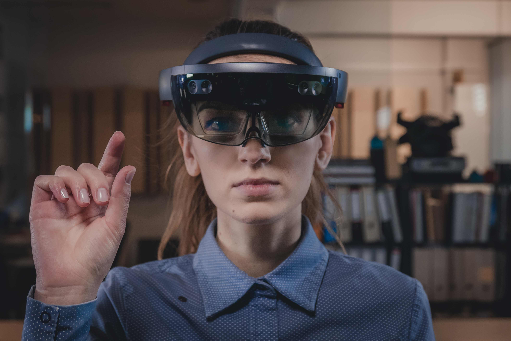

Building a social acceptability framework for AR glasses design
teams
Fortune 500 Social Media Co (Under NDA)
Ethnography, contextual inquiry, semi-structured interviewing
In 2018, I worked as a Senior Researcher on a team at ReD
Associates conducting ethnographic research into the social
impacts of face-worn augmented reality. I was involved in all
stages of the project, including recruiting (manual and vendor
relationship management), stakeholder interviewing, research
protocol design and testing, field interviews, data analysis,
report production, and presentaion to client stakeholders.
Our work produced a social acceptability framework that was put into use by our client both as a tool for finding additional product feature opportunities, and as an ethical guide for future design ideation.
This work is under NDA. Please see below for a light summary, or contact me to learn more.
Our work produced a social acceptability framework that was put into use by our client both as a tool for finding additional product feature opportunities, and as an ethical guide for future design ideation.
This work is under NDA. Please see below for a light summary, or contact me to learn more.

SocialCo needed foundational insights about the effects of AR
glasses on social environments
While AR technology is nascent, SocialCo was well-positioned by
previous investments in AR technology. What they didn't have was
a depth of knowledge about the social and cultural impacts of
possible AR interactions.
Our research team conducted 3 large-scale public experiments, 15
contextual inquiries, and numerous intercept interviews over 4
months
In addition to interviews with individuals, I conducted live
intercept experiments wearing an AR glasses device or prototype
and simulating behaviors in public spaces. We then made contact
with and interviewed passersby and people in the surrounding
area in order to understand their assumptions and reactions
about the device wearer.
We also conducted several controlled social experiments with a particular focus on participants from underrepresented minority groups. These used a variety of methods to isolate and simulate some of the key social experieces we hypothesized would result from mass adoption of AR glasses.
We also conducted several controlled social experiments with a particular focus on participants from underrepresented minority groups. These used a variety of methods to isolate and simulate some of the key social experieces we hypothesized would result from mass adoption of AR glasses.

Our work is in use today, guiding SocialCo desginers as they
develop features for the company's first models of AR glasses.
The details of our experimental insights and how SocialCo is
putting them to use are protected by NDA. Please contact me for
more detail.